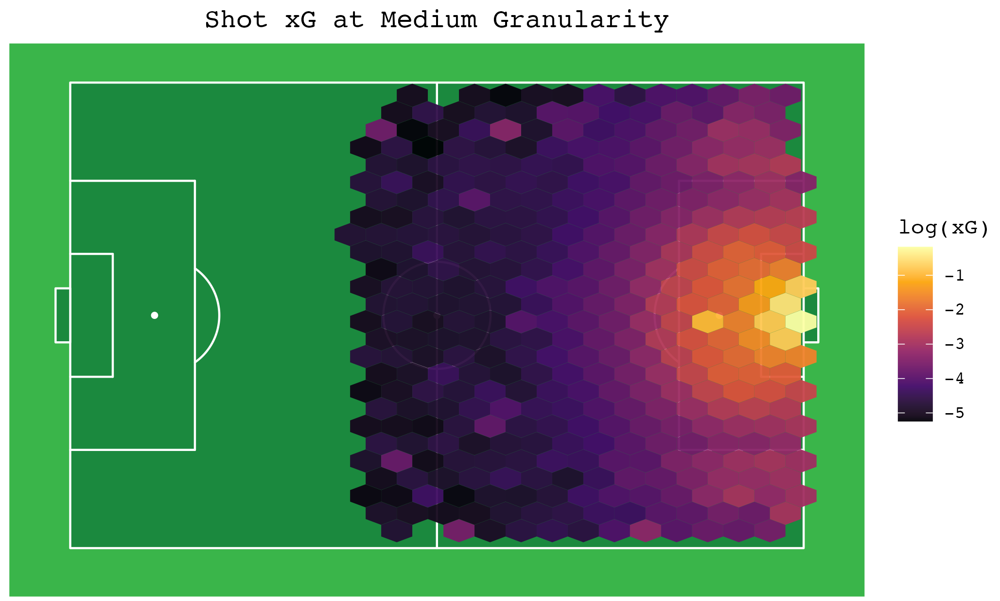
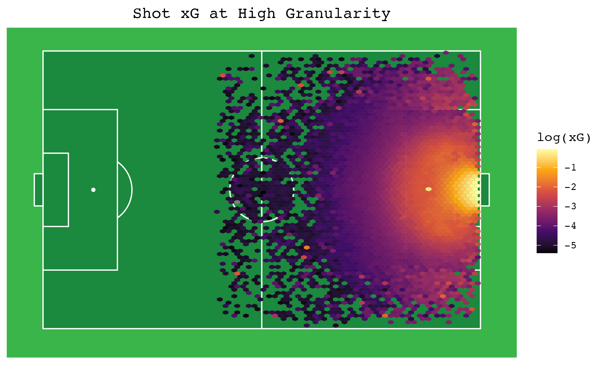

Data Exploration of Football Data

Spatial Data in R
R and RStudio are both incredible powerful tools for analysis of large datasets. As a visualisation analyst, I was interested in how I can use the features in R, along with ggplot2 to produce stunning graphics. I wanted to see how ggplot can reveal the intricacies of expected goals models in football, using a shots dataset sourced from douglasbc on GitHub, I was able to access a large amount of shot data for several football seasons to visualise. Firstly I needed to utilise ggplot to produce a football pitch background.
Plot Background
After a small amount of research, I found the ggsoccer package for R. This perfectly implements the feature I wanted with a simple line of code:
+ annotate_pitch(fill = "#1b893e", colour = "white") + theme_pitch()
Thus with very little effort, I had a pitch background.
Displaying Expected Goals (xG)
I wanted some kind of heatmap to show xG across the pitch so that it was easy to see variation based on position of the shot taken. Using hex map was perfect for this:
+ stat_summary_hex(fun = function(x) log(mean(x)), bins = num_bins)
Taking the logarithm of the mean of the xG for each hexagon allowed for smoother variation. As there was such a large order of magnitude change in xG from shots taken in the penalty area to shots taken near the halfway line, visualising on a linear scale yielded results that were hard to interpret. Using a logarithm is normally the best way to plot this kind of data. Now all the pieces were in place to plot the data on the pitch.
Plots
I could change the granularity of the plot using the num_bins variable to get different results.
Firstly with num_bins = 10, we get quite a low granularity plot, aside xG being higher towards the goal, there are few other discernible features of the plot.

Increasing num_bins to 25 allows some more detail in the plot. We start to see wave patterns in the penalty area, these correspond to contours of the distance from the goal, which is one of the most prominent predictors in xG models. Far away points have lower xG as there is a lower probability of scoring from further away.
Finally at num_bins = 80 we see a highly detailed plot. We can see that more central shots have higher xG, this is because xG depends on the cosine of the angle perpendicular to the goal line, so wider shots have lower xG. It is worth noting that the penalty spot is very bright with high xG compared to surrounding (open play) shots. The few anomalies near the halfway line are caused by there being few datapoints that far away, so taking the mean over fewer datapoints causes the high xG shots to have more leverage.
Overall I found this small projecting empowering to discover the utility of R and ggplot to many applied data scenarios. I hope to be able to use similar techniques in my professional career over the coming years.